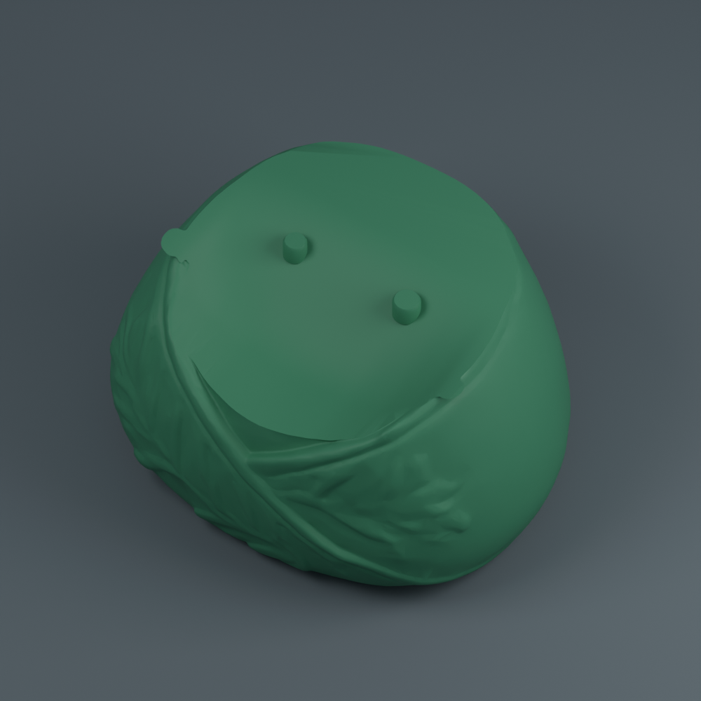
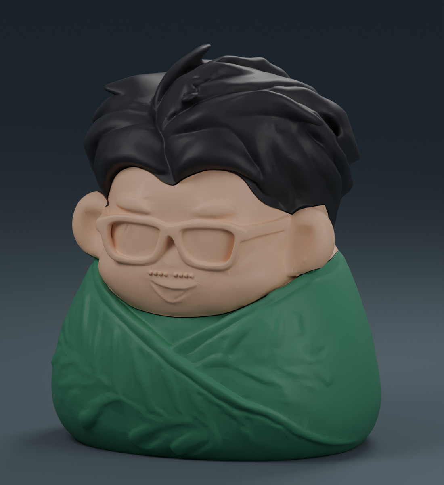
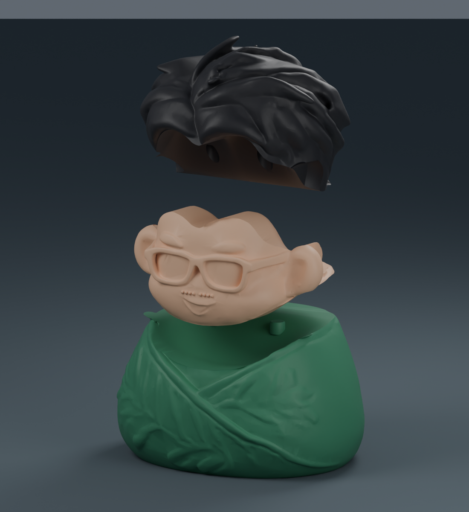
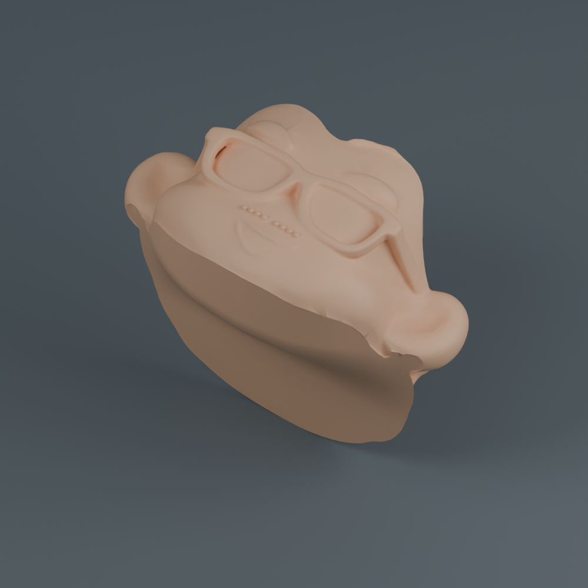
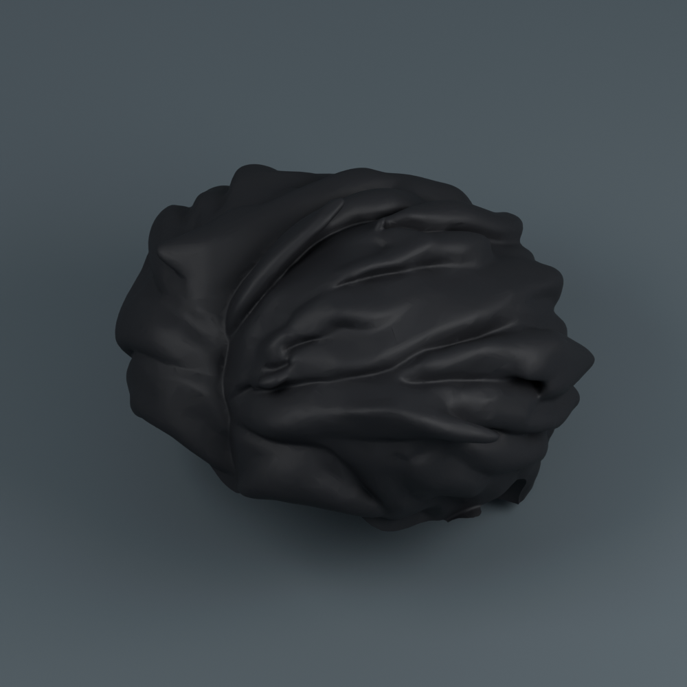

可愛陳晉 · THREE-PIECE ASSEMBLY
臉、頭髮、粽子身體。
只有三個零件。分別用一種顏色列印，再用定位榫組裝。
成品高約 10 cm三張單色盤列印中途零換色無擦料塔


一次開一份檔案，印一個零件
以「專案」開啟 3MF，保留已排好的方向。每盤只選一種線材；完成後再換盤、換上下一件的顏色。


預估總計 8 小時 14 分 · 120.64 g
X1 Carbon／0.4 mm 噴嘴／PLA／0.16 mm 層高。含支撐、底邊與各盤起始流程；不含換盤、清理、冷卻與組裝。使用其他設備時，請切換自己的設定再切片。列印擺放圖沒有顯示自動支撐。
三件組裝，兩個接點
- 冷卻取件後，拆除支撐及底邊，清乾淨榫孔內的殘料。
- 臉底部的孔對準粽子身體的兩根榫，由上往下放入。
- 頭髮底部的孔對準臉背面的兩根榫，由上往下放入。
- 確認試裝順暢，再拆開、在接點少量點膠，依相同順序固定。
孔徑比榫徑大 0.50 mm，單邊間隙 0.25 mm；採用留間隙的定位榫，靠膠固定。若有毛刺先輕磨，不要硬壓。
檢查結果
三件皆為單一閉合實體，裝配干涉、上下插拔方向與三盤切片檢查均通過。每盤僅一個成品、一種耗材；沒有列印途中換色或擦料塔。
尚未實體試印。實際鬆緊會受到機器、線材及支撐清理影響，請先乾式試裝再上膠。
切片器保留床溫提示 1000C001，範例沿用 PLA／紋理 PEI 55°C，請依自己的機型與耗材設定處理。3MF 可編輯，未附預先綁定的 G-code，未傳送列印工作。